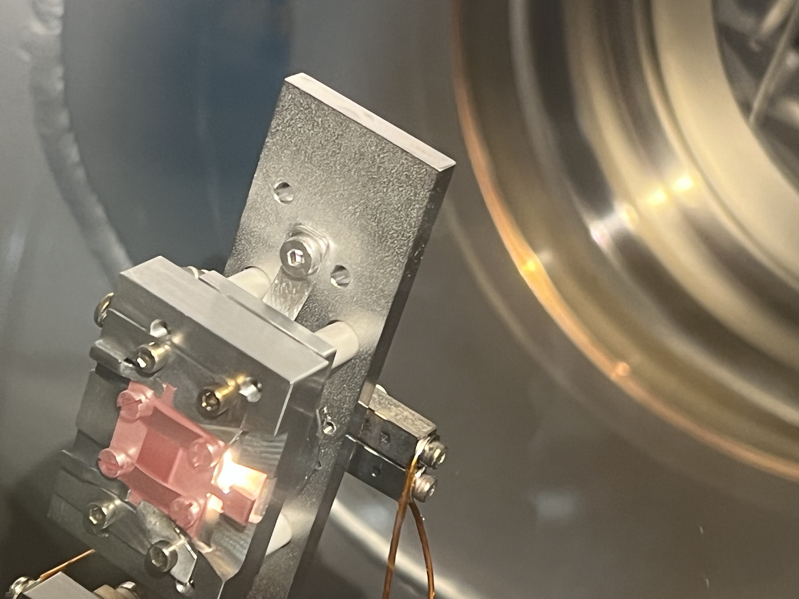
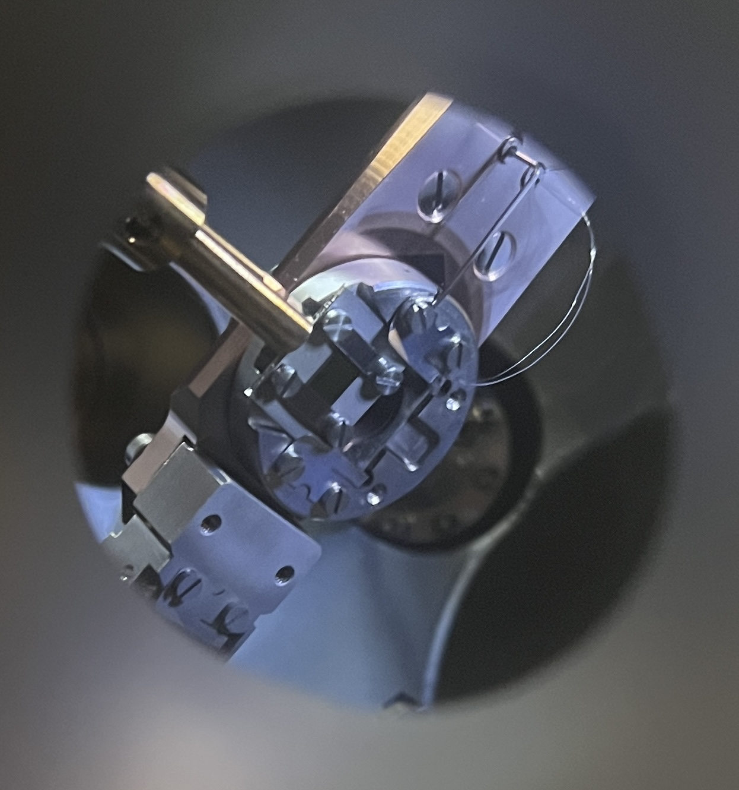
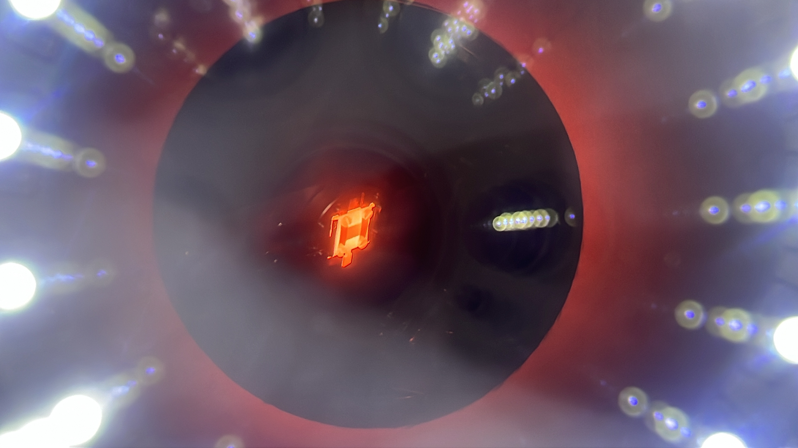

I'm Luqman Mahdi Syed, a recent M.Sc. graduate in Advanced Functional Materials from TU Chemnitz. My work spans surface science and 2D materials — from intercalating epitaxial graphene under UHV to running structure–property studies with XPS, ARPES, and LEED.



I recently completed my M.Sc. in Advanced Functional Materials at Chemnitz University of Technology, spanning materials science, materials physics & chemistry, and process engineering. I'm drawn to problems where a material's atomic-scale structure directly dictates its electronic or thermal function.
My thesis, carried out in Prof. Dr. Thomas Seyller's group, investigated calcium intercalation into epitaxial graphene on SiC(0001) — establishing, from scratch, a preparation recipe using UHV deposition and annealing, and characterizing the resulting structure with XPS, ARPES, and LEED.
I'm now looking for PhD positions and research roles in surface science, 2D materials, or applied process engineering, where I can keep working at the intersection of fundamental materials physics and hands-on characterization.
From UHV surface science to data-driven process control — the threads that connect my projects.
UHV metal deposition and annealing on epitaxial graphene/SiC systems to induce and control intercalation.
XPS, ARPES, LEED, AFM, SEM/TEM, EBSD, and Raman microscopy to link atomic structure to electronic and thermal behavior.
Lithography, etching, and extrusion-related characterization, paired with SPC and DOE for data-driven process optimization.
Developed, from scratch, a preparation recipe for intercalating calcium into epitaxial graphene grown on SiC(0001), enabling further fundamental studies of the system's electronic and structural properties. Deposited Ca via a separate UHV system with vacuum transport to the measurement chambers, then induced intercalation through annealing — solving early oxygen-contamination issues along the way. Characterized samples with XPS, ARPES, and LEED under supervision of Prof. Dr. Thomas Seyller, TU Chemnitz.
Compulsory research project at the Institut für Mechanik und Thermodynamik, TU Chemnitz. Measured emissivity of oxidized, rough, and polished NiTi surfaces from room temperature to 423 K using microscopic non-contact IR thermography referenced against a blackbody cavity, and used Raman microscopy to characterize surface roughness. Showed that emissivity rises through the martensite phase near the transition temperature and falls in the austenite phase, linking the trend to the two phases' distinct atomic structures.
B.Sc. project at Bahauddin Zakariya University: designed and built an Arduino Uno-based home automation and security system, covering sensor integration, control logic, and basic embedded programming.
Independent project applying statistical process control and design of experiments to a raw semiconductor etching process dataset, alongside KPI extraction from the UCI SECOM manufacturing dataset, to identify drivers of process variation and yield.
Surface science and microscopy tools, plus the process-engineering and data side of the work.
Chemnitz University of Technology, Germany — Focus: Materials Science, Materials Physics & Chemistry, Process Engineering. Thesis: "Ca Intercalation into Epitaxial Graphene on SiC(0001)," advised by Prof. Dr. Thomas Seyller.
Bahauddin Zakariya University, Multan, Pakistan — Solid-state physics, quantum physics, thermodynamics. Project: Arduino-based automation system.